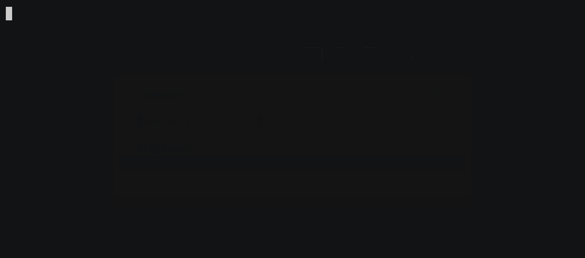

Dev servers, watchers, test suites and REPLs that outlive the turn — started by the agent, waited on properly, and visible to you in the same interface. One daemon, every window.
opencode plugin opencode-cockpit --global
Every frame below is a real recording of OpenCode with the plugin loaded — generated by a script in the repo, so it can never drift from what ships.

Block until the port answers or the log line appears — not a sleep, not a guess. The call returns the moment the thing is actually up.
A watcher turns a never-ending log into transitions: ok → fail with the offending line, and silence while it repeats itself. A process that dies is reported as a failure.
Shells live in a daemon, so they outlast the turn, the session and the window — and a second OpenCode sees the same ones.
OpenCode keeps agent and interface plugins in separate configs. Cockpit reads one file for both, then the project, then the plugin entry.
~/.config/opencode-cockpit/config.json { "kinds": { "e2e": "playwright|cypress" }, "watch": { "presets": { "e2e": { "done": "\d+ (passed|failed)", "fail": "\d+ failed" } } }, "defaults": { "logFile": true, "timeoutSeconds": 900 }, "ui": { "dockHeight": 16, "defaultView": "log" } }
shell_list filter follow.guidance and listRunningShells trade tokens per request against how well the model uses shells.